These are the notes from Lesson 9 of fastai part 2, which is not yet public (may be public by Dec 2022)
The way stable diffusion is normally explained is focused heavily on a particular mathematical derivation. We’ve been developing a totally new way of thinking about stable diffusion and that is what we’ll be seeing. It’s mathematically equivalent to the approach you’ll see in other places but what you’ll realize is that this is actually conceptually much simpler and also later in this course we’ll be showing you some really innovative directions that this can take you when you think of it in this brand new way. I’m expressing it in a different way and it’s equally mathematically valid.
The magic function
Let’s imagine that we are trying to get something to generate handwritten digits ie stable diffusion for handwritten digits. How do we go about it?
We’re going to start by assuming there’s some function or API(black box for now,f- magic function), that takes in a handwritten digit and spits out the probability of it being a handwritten digit. For example we pass in an image X1 and it spits back p(X1) = 0.98 ie probability that X1 is a handwritten digit, X1 corresponds to the digit 3 in the figure below
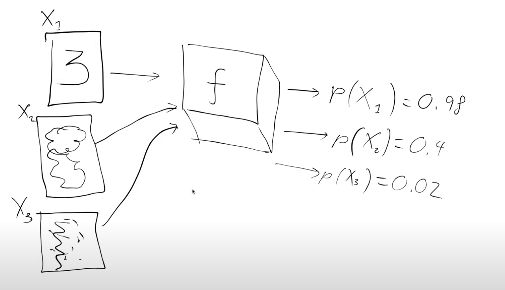
Why is this magic function interesting ? We can use this magic function to actually generate handwritten digits.
Image X3 in the figure doesn’t look like a digit. Let’s see how we could try to convert it into a handwritten digit. It is a 28x28 image with 784 pixels.
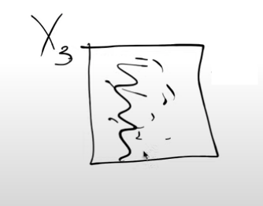
So let’s slightly alter each of the pixels, and each time we alter a pixel we pass it to the magic function and see how the probability changes. We want to make changes to the image with the hope that the probability value of it being a handwritten digit increases.
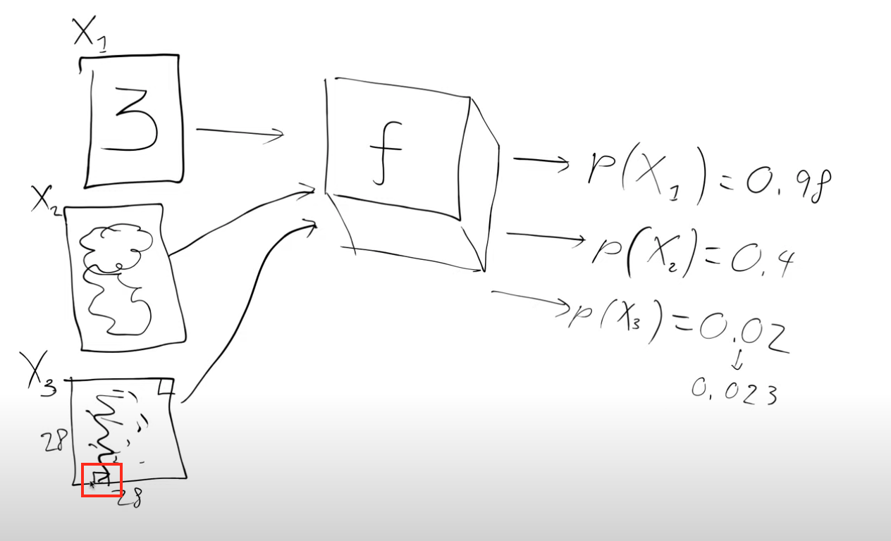
Let’s look at a specific example,image X3. Handwritten digits don’t normally have any pixels that are black in the very bottom edge(red box), so if we made it a little bit lighter and passed it through our magic function the probability would probably go up a tiny bit(say 0.02 to 0.023).
So we could do that for every single pixel of the 28x28 image one at a time. We want to find out which pixels we should be making a little bit lighter and which pixels we should be making a little bit darker to make the image look more like a handwritten digit.
Putting this mathematically - we want the gradient of the probability that X3 is a handwritten digit with respect to the pixels of X3
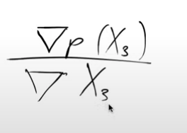
Note: We didn’t say \(∂ p(X3)/ ∂ X3\) which you might be familiar with and the reason for that is that we’ve calculated this \(∂ p(X3)/ ∂ X3\) for every single pixel and so when you do it for lots of different inputs you have to turn the ∂ into a ∇ del or a nabla.
So this means that this \(∇p(X3)/ ∇ X3\) has 784 values (28x28 image). They tell us how we can change X3 to make it look more like a digit. We can now change the pixels according to this gradient and this is a lot like what we do when we train neural networks. Except instead of changing the weights in a model we’re changing the inputs to the model i.e. the image pixels. So we’re going to take every pixel and subtract a little bit of its gradient (c * gradient, where c can be thought of as a learning rate) to get a new image,X3′, which looks slightly more like a handwritten digit than before.
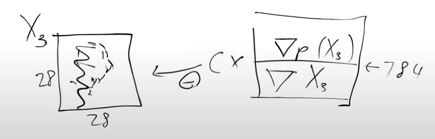
So now we can pass this new updated image(X3′) through our magic function to calculate a new score and repeat this process.
So if we have this magic function we can use it to turn any noisy input into something that looks like a handwritten digit(something with a high probability score). Key thing to remember: as I change the input pixels I get back a probability score that tells me if this image is a handwritten digit.
So if we do this by changing each pixel one at a time to calculate a derivative i.e. finite differencing method of calculating derivatives is very slow. Luckily we can use f.backward() and then X3.grad will have the same thing but all in one go by using the analytic derivatives. So now if we have f.backward() and X3.grad we really don’t need the magic function, f.
We can now multiply the gradient by a small constant c and subtract it from the pixels, we’ll do it a few times so that we get larger and larger probabilities of this being a handwritten digit.
So this magic function will be our neural network which we train to tell us which pixels to change to make an image look more like a handwritten digit.
So next we need some training data. We create this data by using real handwritten digits and then just chucking random noise on top of it. it’s a little bit awkward for us to come up with an exact score which can tell us how much these noisy images are like a handwritten digit so instead let’s predict how much noise was added. This slightly noisy number seven(in the figure below) is actually equal to the original number seven plus some noise.
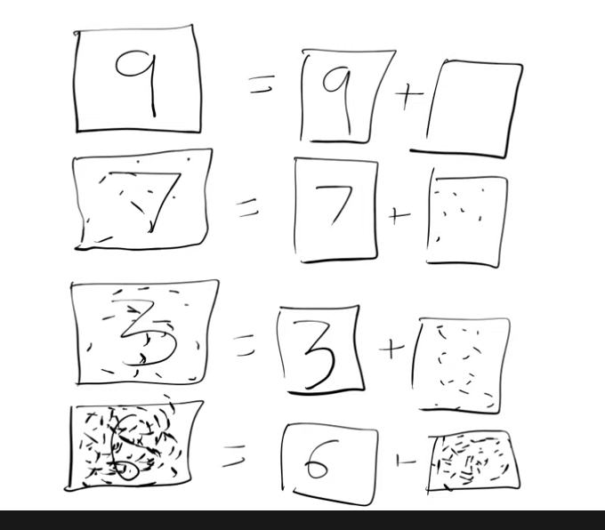
So we generate this data and then rather than trying to come up with the arbitrary probability of predicting how much of a handwritten digit it is we say the amount of noise tells us how much like a digit it is. So something with no noise is very much like a digit(digit 9 in the figure above) and something with lots of noise isn’t much like a digit at all(digit 6 in the figure above) .
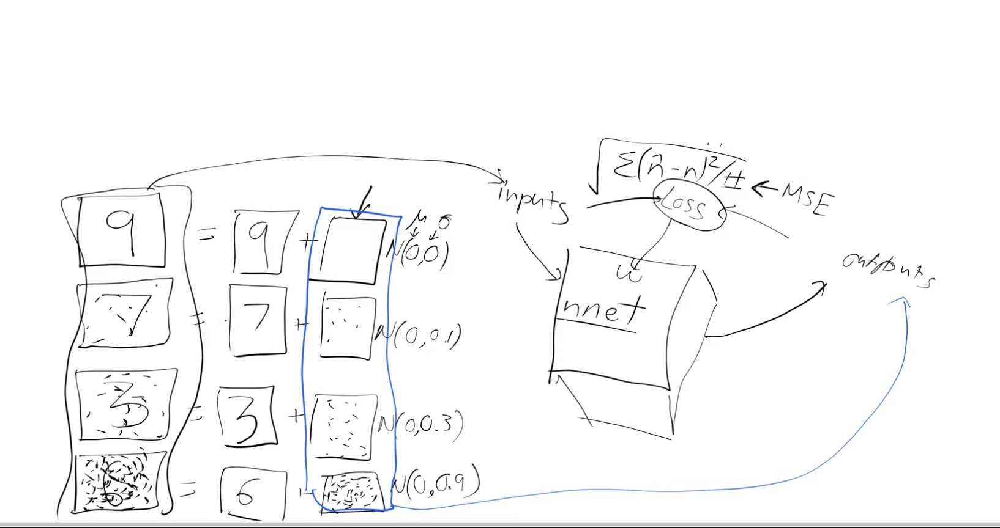
So let’s create a neural net for which we need:
- Inputs -noisy digits
- Outputs - noise
- loss function - MSE, between the predicted output(noise) and the actual noise
With this we have the ability to know how much do we have to change a pixel by to make it look more like a digit, this is exactly what we wanted - \(∇p(X3)/ ∇ X3\) So once we train the neural net we can pass it an image (random noise) and it’s going to spit out information saying which part of that image it think’s is noise and it’s going to leave behind the bits that look the most like a digit but it won’t do this in one step. It will do this iteratively, we’ll see why later.
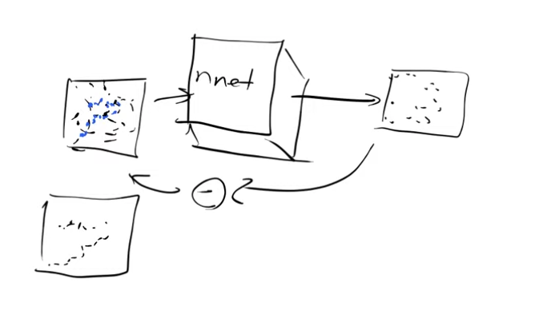
So we can repeat this again and again and you can see now why we are doing this multiple times
Building blocks of stable diffusion
So now with this groundwork laid lets see the building blocks of stable diffusion
1) UNET
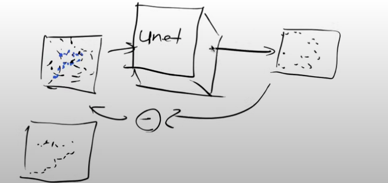
Let’s look at the input and output of the Unet.
- Input - somewhat noisy image, it could be no noisy at all or it could be all noise
- Output - noise
So if we subtract the output from the input we end up with an approximation of the unnoisy image
So our handwritten input image is 28x28, but in reality we would want to generate bigger images. Currently, these models work with 512x512x3 images. So for training this model we use millions of noisy versions of these 512x512x3 images. It is going to take a long time to train it. How can we make this faster? Do we really need to store each and every pixel value? We know pixel values don’t change much locally. Can we use this insight? For example a JPEG picture is far fewer bytes than the number of bytes you would get if you multiplied its height by its width by its channels. So the idea is to use compression.
2)VAE - Variational autoencoders
So let’s see how to compress it with an autoencoder(AE).
Architecture of an autoencoder
At each level we will double the number of channels and use a stride two convolution and at the end we add a few resnet like blocks to squish down the number of channels from 24 to 4.
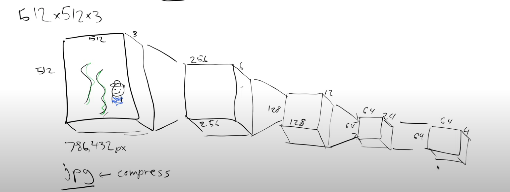
So we started with a 512x512x3 image and we have a representation of this image which has a size of 64x64x4, we have compressed it by a factor of 48. This representation is called latents. What we just saw is an encoder, We are encoding the “big” image to a much “smaller” representation. This factor of compression makes sense depending on how well we can reconstruct the original image back from these latents of size 64x64x4. So let’s build the inverse process to decode these latents, decoder. And then we can put the encoder and decoder together and train it.
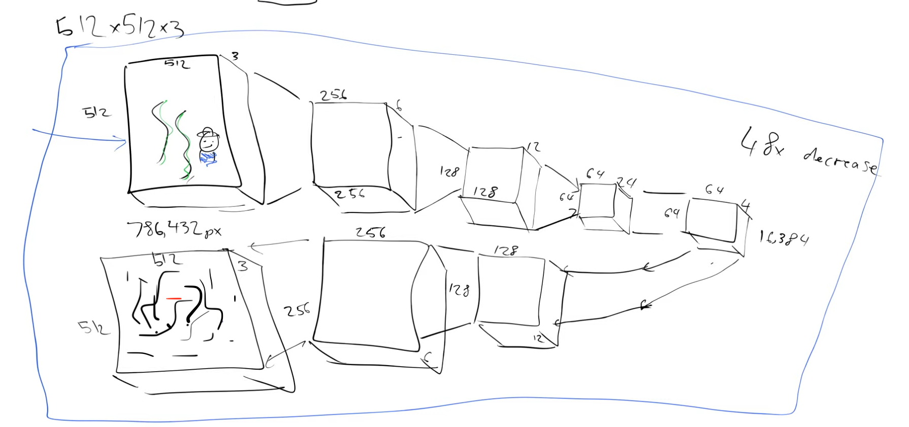
We can use MSE and train this, in the beginning we will get random outputs but later we should get close to our input
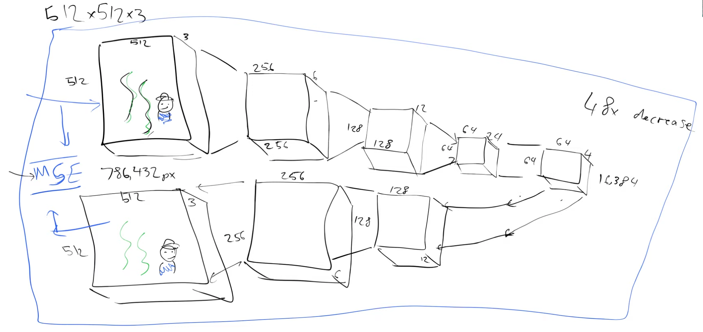
So what is the point of a model that spits back an output that is identical to the input?
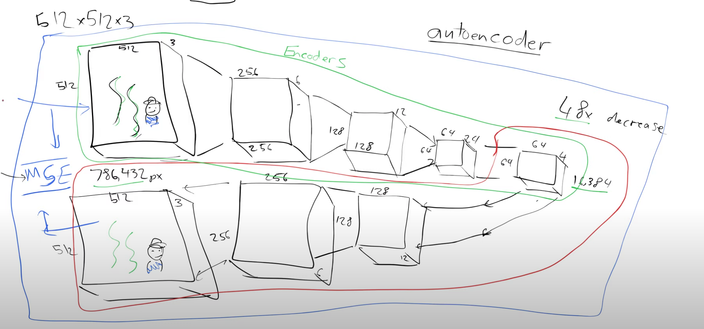
The green bit(when we go from a larger image to a smaller representation) is the encoder and the red bit is the decoder. Say I want to send an image to someone, I could pass it through the encoder and I’ve now got something that’s 48 times smaller than my original picture. The person who receives this can pass it through the decoder(he has a copy of the trained decoder) to get back the original image. This is basically a compression algorithm.
So how can we use this compression algorithm?
We can pass these “smaller” latents as the input to the Unet instead of passing the “bigger” original images.
So let us update the inputs and outputs of the Unet:
- Input - somewhat noisy latents
- Output - noise
Now we can subtract the output from the input to get the denoised latents and pass it to the decoder of theautoencoder to get the best approximation of the denoised version of the image.
This autoencoder in practice is a Variational Autoencoder.
So let’s recap what we have done so far. We started with a 512x512x3 image, passed it through the VAE’s encoder to get a compressed version of size 64x64x4. These latents are then passed through the unet which predicts the noise. We can subtract this noise from the encoder’s latents to get denoised latents. These denosied latents are passed through the decoder of the VAE to generate an image of size 512x512x3.
Few points to keep in mind:
- The VAE is an optional building block. It has the advantage of training the Unet with smaller size latents rather than images, so it’s faster.
- The encoder of the VAE is only required during training and not during inference.
3)CLIP
So next let’s see how the text prompts play a role. Rather than just feeding in noise and getting back some digit, can we ask it to generate a specific number, say “3”.
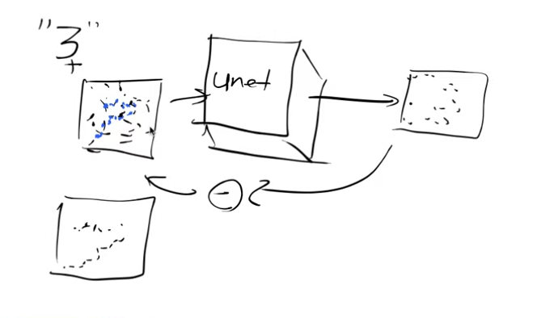
To achieve this, in addition to passing in the noisy input image, let’s also pass in a one hot encoded version of the digit “3”.
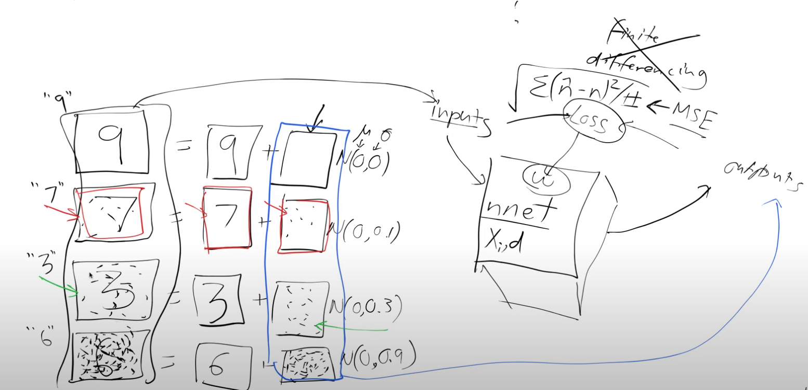
So we’re now passing two things into this model, the image pixels and what digit it is in one hot encoded vector form. So the model is going to learn how to predict what the noise is and since it has this extra information of what the original digit was, we can expect this model to be better at predicting noise than the previous one.
After the model has been trained, if we feed in “3”(one hot encoded vector) and the noise, it is going to say the noise is everything that doesn’t represent the number three. So this is called guidance. We can use that guidance to guide the model as to what image we want it to create.
Is one hot encoded vector the best way though? Say we want to create an image from the phrase - “a cute teddy”. If we were to use 1- hot encoded vectors then we have to create a 1-hot encoded vector for every phrase, which seems very inefficient.
We’ll create a model that can use the phrase -”a cute teddy” as an input and can output a vector of numbers,embeddings, that in some way represents what “cute teddies” look like.
So we can gather images from the internet and if they have alt tags they will have some description of the image i.e. a text associated with that image.
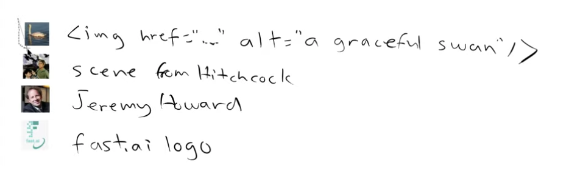
Now we can create two models, one model which is a text encoder and one model which is an image encoder.
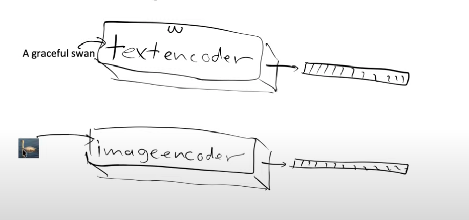
So we can pass the image to the image encoder and text to the text encoder and they will each give us two embeddings.
Now when we pass the image of the swan, through our image model we would like it to return embeddings which are similar to the embeddings that we get when we pass the text “the graceful swan” through the text encoder. In other words we want their embeddings to be similar. How do we tell our model to do this? We can use dot product to check for similarity between the embeddings. Higher the dot product more similar are the embeddings.
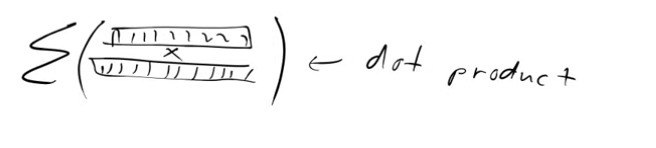
So now we have a grid of images and text, each combination of their embeddings will give us a score when we take their dot product. We want the dot product for only the matching image-text pairs to be high(blue,diagonal element) and similarly we want the non matching pairs of text and image to be small(red, off diagonal elements)
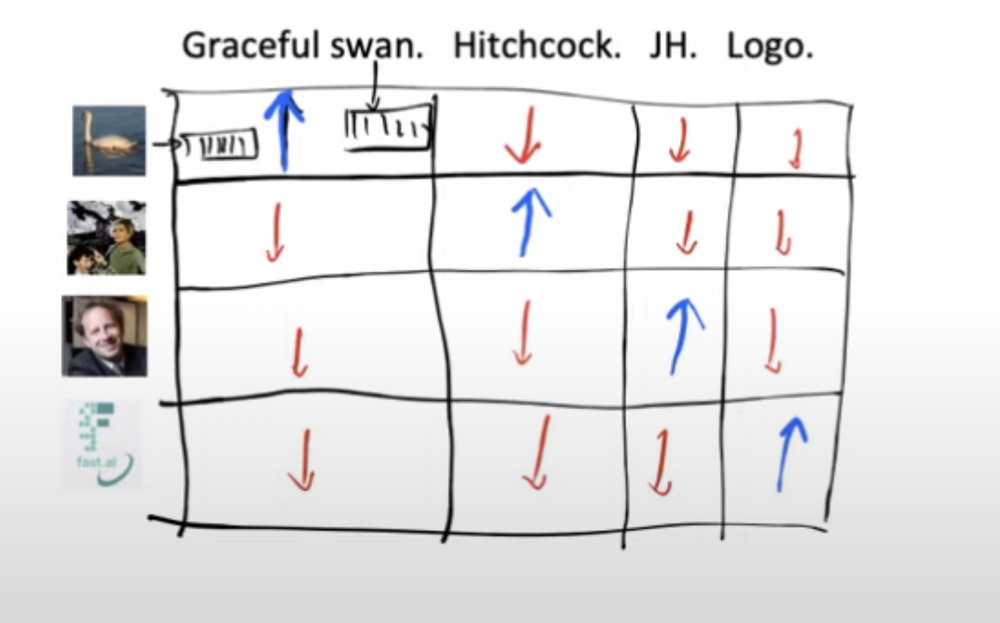
So our loss function can be defined as adding all the diagonal elements and subtracting from it the off-diagonal elements.
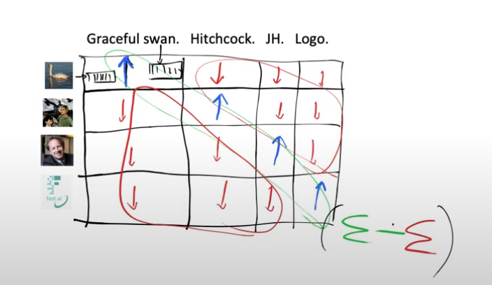
If we want this loss function to be good then we’re going to need the weights of our model for the text encoder to spit out embeddings that are very similar to the image embeddings that they’re paired with and not similar to the embedding of the images they are not paired with.
Now we can feed our text encoder with “a graceful swan”, “some beautiful swan”, “such a lovely swan” and these should all give very similar embeddings because these would all represent very similar images of swans.
We’ve successfully created two models that put text and images into the same space, a multimodal(using more than one mode-images and text) model.
So we took this detour because creating 1-hot encoded vectors for all the possible phrases was impractical. We can can now take our phrase - “a cute teddy bear” and feed it in text encoder to get out some features/embeddings.
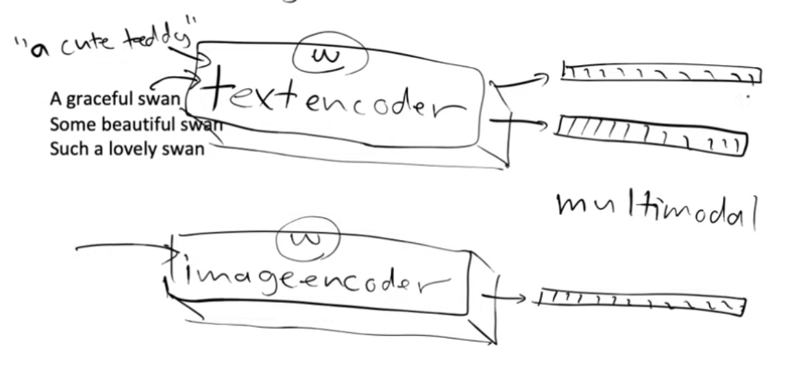
These features are what we will use as guides instead of the 1- hot encoded vectors when we train our Unet. So we pass the phrase - “a cute teddy’ to our text encoder, which will generate embeddings which is going to be used as a guide by our model to turn the input noisy image into something that is similar to things that it’s previously seen that are “cute teddies”
This pair of models have a name - CLIP,Contrastive Language-Image Pre-training and the loss we are using is called contrastive loss.
Let us see what all building blocks we have so far.
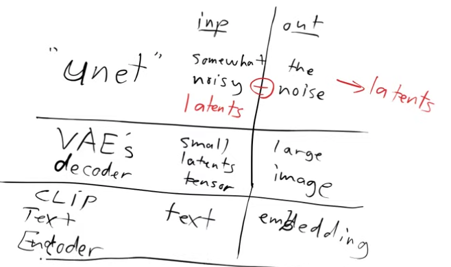
- we’ve got a Unet that can denoise latents into unnoisy latents
- we’ve got the decoder of VAE that can take latents and create an image
- we’ve got the CLIP text encoder which can guide the Unet with captions
Stable diffusion is a latent diffusion model and what that means is that it doesn’t operate in the pixel space, it operates on in the latent space of some other autoencoder model and in this case that is a variational autoencoder.
Some jargon:
- score function
- time-steps.
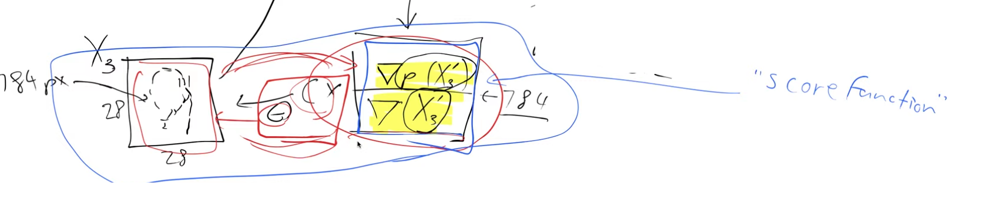
These gradients that we have are often called the score function.
“Time steps” is the jargon used in a lot of papers but we never used any time steps during our training. This is basically an overhang from how the math was formulated in the initial papers. We will avoid using the term time steps but we can see what time steps are though it’s got nothing to do with time in real life.
We added varying levels of noise to our images, some were very noisy, some were not noisy at all, some had no noise and some would have been pure noise.
Let’s create a noising schedule,which is a monotonically decreasing function. Where say the x-axis(“t”) varies from one to a thousand. Now we randomly pick a number between one and thousand, we look up in the noise schedule and return the sigma(or beta is what you’ll see in papers). Say we happen to pick the number four, we would look up to find a value on the y-axis which is the sigma, the amount of noise to add to your image if you randomly picked a four.
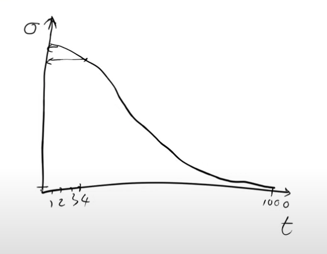
If you randomly pick one you’re going to have a lot of noise and if you pick a 1000 you’re going to have hardly any noise.
So when we are training we need to pick some random amount of noise for every image. One way to get the random noise is to pick a random number between one to a thousand, look it up on this noise scheduler function and that will tell us the sigma of the noise to be added.
People refer to this t as the time step, nowadays you don’t really have to look up in the noise scheduler. A lot of people are starting to get rid of this idea altogether and some people instead will simply say how much noise was there.
So each time you create a mini batch during training, you randomly pick a batch of images from your training set, you randomly pick either an amount of noise or you randomly pick a t and then look up the amount of noise and then use that amount of noise to create the noisy images. Then you pass that mini batch into your model to train it and that trains the weights in your model so it can learn to predict noise.
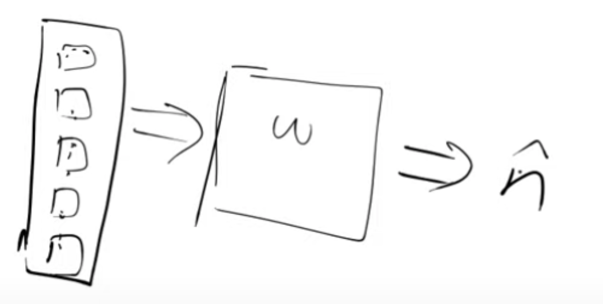
How exactly do we do this inference process ? When you’re generating a picture from pure noise, this corresponds to t=0 on the noise scheduler where you have maximum noise. So you want it to learn to remove noise but if you do this in one step you’ll end up with bad images.
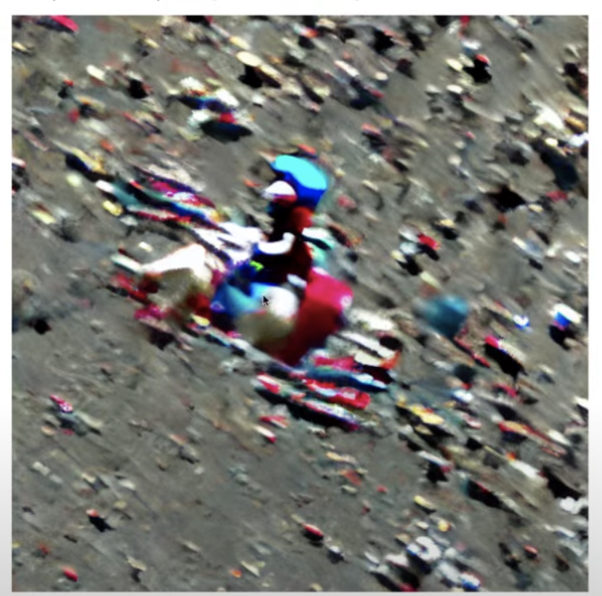
So in practice we get the prediction of the noise and then we multiply it by some constant,c, which is like a learning rate but here we’re not updating weights now we’re updating pixels and we subtract it from the original noisy pixels. So it doesn’t actually predict the final denoised image, all it does is remove some small factor of the noise to give us a slightly denoised image.
The reason we don’t jump all the way to the final image is because things that look like the image we got by using t=1 (crappy image) never appeared in our training set(does this mean we never train with highly noised images??) and so since it never appeared in our training set our model has no idea what to do with it. Our model only knows how to deal with things that look like somewhat noisy latents and so that’s why we subtract just a small factor of the noise so that we still have a somewhat noisy latent for this process to repeat a bunch of times.
The questions of what c to use and how do we go from the prediction of noise to what we subtract are the kind of the things that you decide in the actual diffusion sampler. The sampler is used to both add the noise and how to subtract the noise
This looks a lot like deep learning optimizers. If you change the same parameters by a similar amount multiple times in multiple steps maybe you should increase the amount you change them, this concept is something we call Momentum. We even have better ways of doing that where we say well what happens as the variance changes. Maybe we can look at that as well and that gives us something called Adam and these are types of optimizers. All diffusion-based models came from a very different world of math, which is the world of differential equations. There are a lot of parallel concepts in these two worlds. Differential equations is all about how to take bigger steps instead of taking smaller steps so we can converge quicker. Differential equation solvers use a lot of the same kind of ideas as optimizers, if you squint. One thing that differential equations solvers do which is that they tend to take t as an input and in fact pretty much all diffusion models do that too, we hadn’t spoken about that.
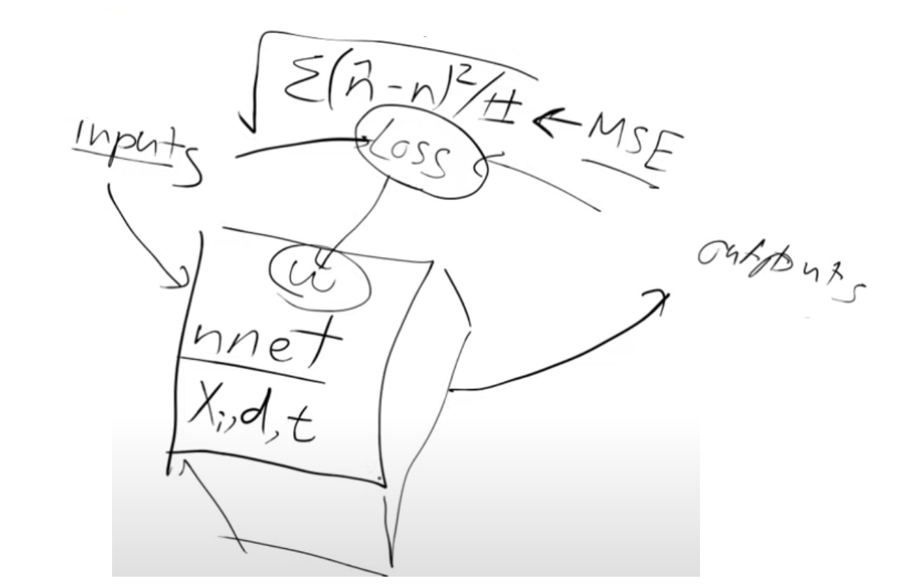
Pretty much all diffusion models don’t just take the input pixels and the caption, they also take t. And the idea is that the model will be better at removing the noise if you tell it how much noise there is and remember t is related to how much noise there is.
Jeremy very strongly suspects that this premise is incorrect because for a fancy neural net figuring out how noisy something is very simple. So when you don’t need to pass in t things stop looking like differential equations and they start looking more like optimizers
We could swap MSE with perceptual loss. All these things suddenly become possible when we start thinking of this as an optimization problem rather than a differential equation solving problem